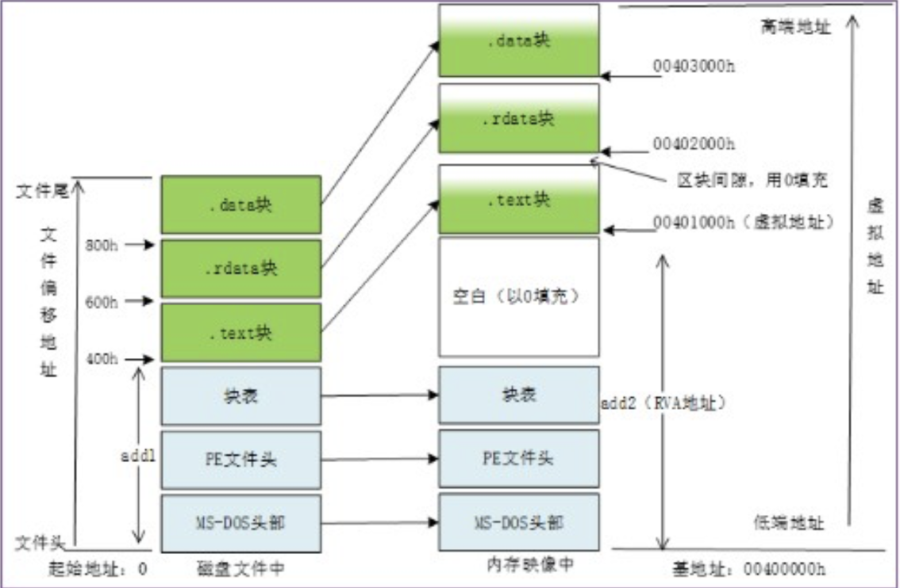

PE文件结构¶
本章节知识点强调：
- 可执行文件
- PE文件基本概念：虚拟地址空间、相对虚拟地址
- DOS文件头：MZ头、定位PE头
- PE文件头：AddressEntryPoint、ImageRase、数据目录
- 节：文件偏移RAW到内存地址RVA的转换方法
- 导入表：INT、IAT
- 导出表：AddressOfNames，AddresssOfNAmeOriginals,AddressOfFunctions
关于PE文件存储的形式 - 小端序
在PE文件存储采用的是小端序存储方式，例如我要存储这个字段“50450000”，在内存中的值是“00‘00’45‘50”
可执行文件¶
可执行文件 (executable file) • 可以由操作系统进行加载、执行的文件 • 在不同的操作系统环境（Windows、Linux、MacOS）下，可执行文件的格式不一样 • 二进制文件，不同于txt、word、excel等文本文件
Windows系统可执行文件使用PE文件格式， Linux系统可执行文件使用ELF文件格式。
在Windows操作系统下，可执行程序可以是.com文件、 .exe文 件、 .sys文件、 .dll文件、.scr文件等类型文件
各种可执行文件的类型解释
- .sys - 通常在Windows操作系统中使用，主要用于存储设备驱动程序或与系统硬件、软件交互的系统配置
- .scr - 屏幕保护程序文件，常用于Windows操作系统。
- .dll - DLL文件中存放的是各类程序的函数(子过程)实现过程，当程序需要调用函数时需要先载入DLL，然后取得函数的地址，最后进行调用。
.com文件¶
.com文件在IBM PC早期出现，格式主要用于命令行应用程序、最大65,280字节。与MS-DOS操作系统的可执行文件兼容
.exe、.dll、.sys可执行文件¶
.exe,.dll,.sys文件使用的是PE文件结构
什么是PE
PE（Portable Executable File Format）可移植可执行文件结构,PE文件是Windows下可执行文件的总称。 理解PE文件结构是逆向技术的基础
ELF可执行文件¶
静态链接器会以链接视图解析ELF文件，动态链接器会以执行视图解析ELF文件并动态链接。
PE文件基本概念¶
PE文件使用的是线性地址空间 所有代码和数据都在一个地址空间，组成PE文件 文件内容被分割为不同的节(Section，也叫做块、区块、段等)
节¶
代码节、数据节 • 各个节按页边界对齐（4096Bytes） • 节是一个连续结构，没有大小限制 • 每个节都有自己的内存属性
虚拟内存地址空间¶
每个程序都有自己的虚拟内存地址空间，虚拟空间的内存地址称为虚拟地址(Virtual Address，VA) • 4GB • 不同进程的虚拟地址空间是相互隔离的
模块¶
当PE文件通过Windows加载器载入内存后，内存中的版本称为模块(Module) • 映射文件的起始地址称为模块句柄( hModule ) • 初始内存地址也称为基地址( ImageBase )
内存中的模块代表进程将这个可执行文件所需要的代码、数据、资源、输入表、输出表及其它有用的数据结构都放在一个连续的内存节中
相对虚拟地址¶
使用相对虚拟地址的原因：
- 模块的地址冲突问题 - 模块的加载顺序和加载地址是不确定的
- 在可执行文件中，有许多地方需要内存地址
- PE文件有一个首选的载入地址(基地址)，并且PE文件可以载入到进程空间任何地方
• RVA是相对于PE文件载入地址的偏移位置
假设一个EXE文件从00400000h处载入内存 代码节起始地址为401000h，代码节起始地址的RVA计算方法如下: 目标地址401000h - 载入地址400000h = RVA 1000h
• 将RVA转换成虚拟地址VA的过程 用实际的载入地址ImageBase加相对虚拟地址RVA 虚拟地址(VA)=基地址(ImageBase)+相对虚拟地址(RVA)
DOS文件头¶
每个PE文件都是以一个16位的DOS程序开始的，DOS MZ头与DOS stub合称为DOS文件头 DOS开头是一个Magic-Number:5A4D
PE文件头¶
PE文件头(PE Header)紧跟在DOS stub的后面，IMAGE_DOS_HEADER结构的e_lfanew字段定位PE Header的起始偏移量，加上基址，得到PE文件头的指针
\(\(PNTHeader = ImageBase+DosHeader->e\_lfanew\)\)
Signature¶
在一个有效的PE文件中，Signature的字段的值是"00004550h"（注意不要丢掉h后缀） 对应的ASCII字符是如下：“PE\0\0”
FileHeader¶
- Machine：可执行文件的目标CPU类型
- NumberOfSections：记录节(Section)的数量
- TimeDateStamp：文件的创建时间
- Characteristics(类似于EFLAGS)：字段用于描述文件的属性
Characteristic¶
节¶
节表¶
!!! Note “为什么要使用节（section）” 简单来说，就是为了保证程序的安全性，把code和data放在同一个内存节相互纠缠，很容易引发安全问题。code有可能被data覆盖，导致程序崩溃。
PE文件格式将内存属性相同的数据统一保存在一个被称为“节”（section）的地方。然后节表包括：
-
Name（8Byte）：块名
-
VirtualSize（DWORD）：在内存空间中节的大小
-
VirtualAddress（DWORD）：节在内存空间的起始RVA
- SizeOfRawData（DWORD）：该节在硬盘中所占的空间
- PointTORawData（DWORD）：该节在硬盘中的偏移
注意节在内存中的存储地址
节在内存中的存储地址是——相对虚拟地址。
节的内存属性¶
关于块的属性：
- 2000‘0000h，可执行
- 4000‘0000h，可读
- 8000’0000h，可写
节的内容¶
- 0000‘0020h，包含可执行代码
- 0000’0040h，包含已初始化的数据
- 0000‘0080h，包含没有初始化的数据
文件偏移与虚拟内存地址转换¶
我们记文件偏移量是RAW,记虚拟内存地址RVA:
